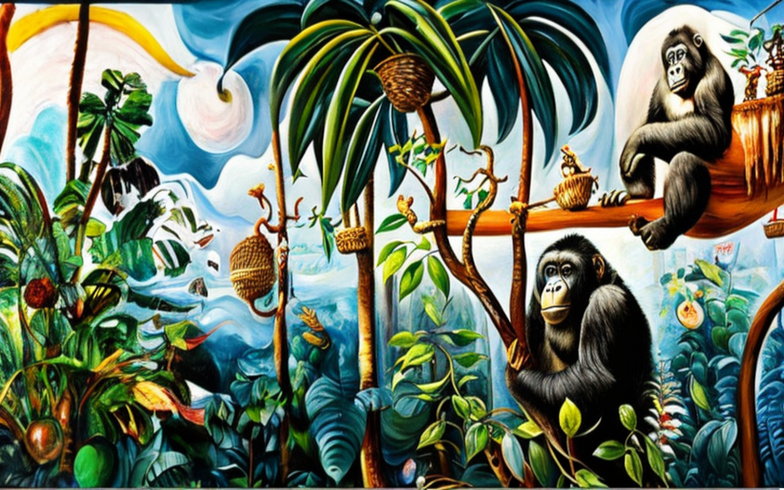
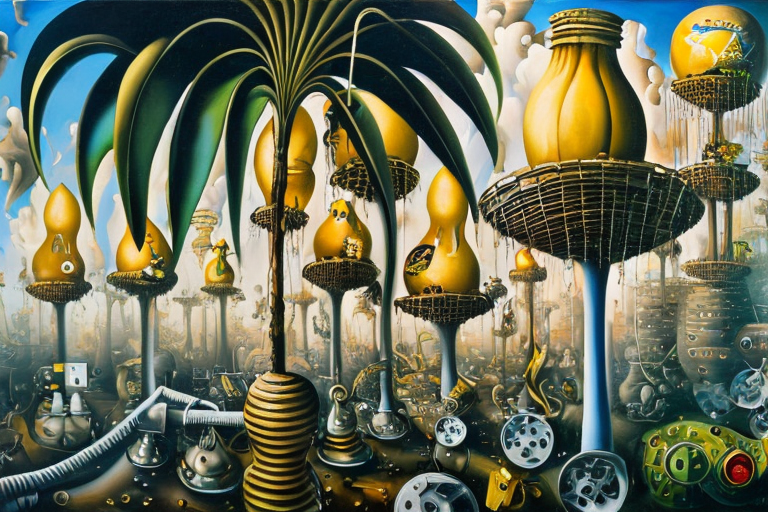
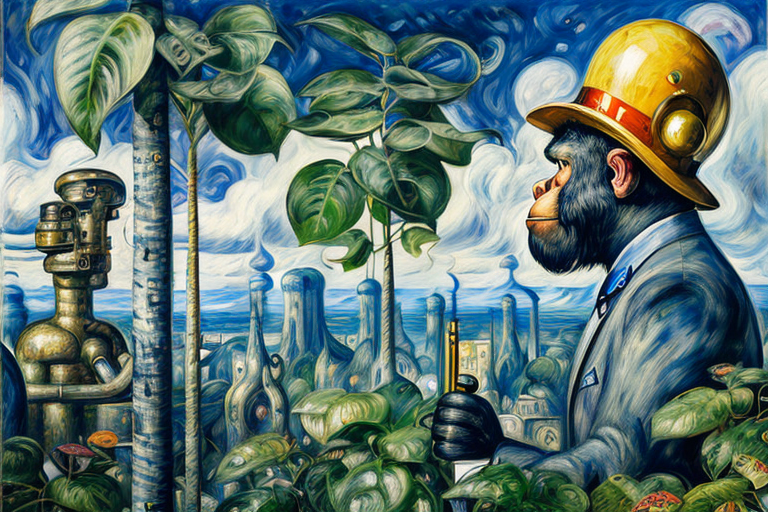
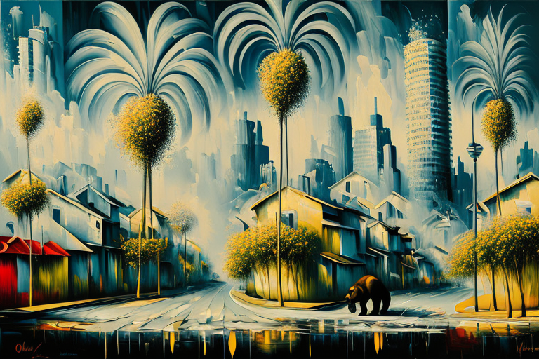
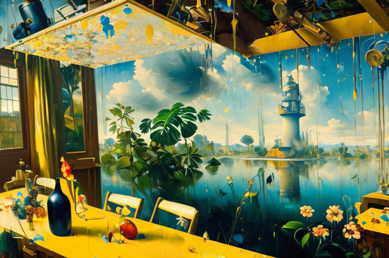

The banana peel reactor and the hair drier
HOME
Table of Contents
Frizzed and frustrated

The jungle pulsated with the symphony of primal beats and fruity indulgence, as the mighty gorillas went about their daily affairs. From the boisterous chest-beating contests to the relentless banana feast, life in the troop was a never-ending spectacle. But amidst all the hubbub, there was one gorilla who stood out from the rest - Mrs. Hairybottom. She was known far and wide for her magnificent mane of shaggy fur, which she took great pride in grooming every day.
However, on this fateful day, Mrs. Hairybottom encountered a hairy hiccup. Her fur, victim to the insufferable mugginess that pervaded the jungle, had become undeniably frizzed and soggy. Determined to address this pressing matter, she took matters into her own capable hands (or, more accurately, her remarkably dexterous gorilla limbs) and devised a plan. Scaling the tallest tree within proximity, she yearned for the gentle caress of the breeze atop its lofty branches, a remedy that would hopefully obliterate her unwanted fluffiness with haste.
Perched comfortably upon a stout bough, Mrs. Hairybottom couldn’t help but feel a surge of contentment. This was the precise solution she sought, poised to eradicate her burdensome fuzz once and for all. Little did she fathom that this seemingly innocuous choice would serve as the catalyst, triggering a chain reaction capable of shaking the very foundations of Gorillaland.
Down below, Bongo grew increasingly concerned. His beloved better half had ascended that tree hours ago, and the distant rustling of foliage and snapping twigs reverberated in his ears. Was she safe? What if a rapacious predator had cast its malevolent gaze upon her and was now plotting a merciless assault? Fueled by an adrenaline-fueled mixture of panic and determination, Bongo embarked on an arduous climb, each step accompanied by grunts and straining muscles. Finally, after an eternity of striving, he reached the zenith and laid eyes upon his wife, who seemed disturbingly at ease, comfortably perched on a branch.
“Wife! What in the jungle’s name are you still doing up here?” Bongo exclaimed, his exasperation palpable. “We have young ones down on the ground waiting for us!”
Mrs. Hairybottom cast a fond glance downwards, her expression laced with a hint of condescension. “Dearest husband, I find myself engaged in the noble task of fur-drying,” she replied, her tone reminiscent of indulgence. “The oppressive heat and suffocating humidity below necessitated this relocation.”
Bongo, with an internal eye-roll so profound it threatened to detach from his skull, contemplated the enigma of femininity. Oh, the lengths they would go for the sake of vanity!
Banana peel fusion

Determined to appease his beloved Mrs. Hairybottom and her insatiable desire for a perfectly coiffed mane, Bongo ventured into the realm of nuclear science, armed with radioactive potassium and a whole lot of monkey business. So he embarks on a quest for the ultimate gift, a banana peel reactor capable of bestowing upon her the magnificent power of yellow energy.
“Darling”, Bongo proclaimed with an air of calculated mischief, “I shall bestow upon you a marvel of modern gorilla engineering—a banana peel reactor that shall provide you with an endless supply of radioactive energy to electrify your hair drier!”
Mrs. Hairybottom, her curiosity piqued, looked at her eager spouse with a mix of amusement and skepticism. “Banana peel reactor? Do tell me more, my dear Bongo.”
With a flourish of exaggerated gestures, Bongo began his elaborate explanation. “You see, my love, bananas are not just a delightful tropical treat. They contain an abundance of potassium, which harbors a hidden power. When harnessed correctly, the radioactive goodness from the peels is capable of energizing your hair drier to unprecedented heights!”
Mrs. Hairybottom raised an eyebrow, simultaneously intrigued and bemused by her husband’s outlandish proposal. “And how does this banana nuclear reactor work, pray tell?”
Bongo, relishing the opportunity to indulge in scientific jargon, launched into an exuberant monologue. “Ah, the magic lies in the radioactivity of potassium! By extracting the potassium from the banana peels and subjecting it to controlled nuclear fission, we can generate a stream of yellow energy, perfectly suited to electrify your hair drier. It’s a hair-raising solution, quite literally!”
Mrs. Hairybottom couldn’t help but burst into laughter, envisioning a world where banana peels powered her hair-drying endeavors. “Oh, Bongo, Oh, you never fail to amaze me with your audacious ingenuity! When shall this wondrous contraption come to fruition?”
With a twinkle in his eyes and a mischievous grin, Bongo vowed, “Fear not, my love! I have already assembled a team of banana-obsessed gorilla engineers who toil day and night, perfecting the banana peel reactor’s design. Soon, my dear, you shall possess the power of yellow energy at your fingertips!”
Finally, after many banana-related mishaps and a chorus of singing monkeys, the banana peel reactor was complete. With great anticipation and a dash of trepidation, Mrs. Hairybottom stepped forward, her hair drier in hand, ready to witness the transformation that would electrify her coiffure.
As Bongo activated the banana peel reactor, the jungle was bathed in a surreal yellow glow. The radioactive potassium within the banana peels pulsed with energy, feeding the hair drier with a power never before seen in Gorillaland. Mrs. Hairybottom’s hair, once tame and well-groomed, now stood on end, crackling with electricity.
From fur to fashion

As the banana peel reactor whirred to life, emanating a faint yellow glow, the jungle took on an ethereal, otherworldly appearance. The dim radiance cast by the radioactivity painted the dense foliage with an eerie luminescence, turning the once familiar landscape into a surreal dreamscape. Gorillas, unsuspecting of the transformative powers lurking within the yellow energy, roamed the jungle with a newfound luminescent aura.
Unbeknownst to Bongo, the radioactivity emitted by his creation had unforeseen consequences. The very air crackled with an radioactive energy, and the gorillas unwittingly became subjects to a bizarre mutation. Slowly but surely, their limbs elongated, fur receded, and their once mighty roars gave way to a newfound ability to articulate complex thoughts. Gorillas, once masters of the jungle, now found themselves transforming half-way into peculiar creatures indeed - humans.
The formerly mighty gorillas, now draped in clothing and burdened with the frailty of their newfound half-human forms, stumbled through the jungle, grappling with their peculiar predicament.
Bongo, his eyes wide with a mix of shock and awe, surveyed the jungle now teeming with these peculiar humanoid creatures. “By the hairy hands of Zeus!” he exclaimed, his voice tinged with a mix of disbelief and amusement. “I never anticipated this turn of events.”
Mrs. Hairybottom, her once magnificent fur now replaced with human hair, stared at her transformed self in disbelief. “Bongo, what have you done? Why you didn’t predict that the radioactive energy of the banana peel reactor would not only electrify my hair drier but also transform our entire species?”
Bongo, with a mix of regret and bemusement, scratched his bald head and muttered, “I may have miscalculated the potency of the banana peel reactor, my dear.”
And so, armed with newfound humanity the gorilla-turned-humans embarked on a journey to rectify their transformative fate. Through trials and tribulations, the former gorillas discovered that being human came with its own set of challenges and opportunities. They grappled with language, fashion, and the perplexing art of small talk.
As the jungle echoed with laughter and poignant reflections, the mutated troop of gorillas-turned-humans sought to find their place in a world that no longer recognized them as the kings and queens of the animal kingdom. No longer content with simply chest-beating and banana-munching, they embarked on a quest for self-discovery, the once primal and untamed gorillas, now burdened with the weight of civilization, grappled with the complexities of politics, romance, and the intricacies of toilet paper folding.
Radiant urbanization

And so it came to pass that the half-human, half-gorilla creatures of Gorillaland, in their quest for self-discovery and integration into the human world, made a bold decision. They chose to abandon the lush greenery of the jungle, with its cacophony of wildlife and freedom, in favor of a new habitat - concrete houses.
So it came to pass that the half-gorillas torn between their primal nature and newfound humanity, abandoned their natural habitats en masse and sought solace in the realm of bricks and mortar. Gone were the days of swinging through the trees and foraging for food. Now, they yearned for the comforts of indoor plumbing, Wi-Fi, and an endless supply of snacks from the local grocery store.
These new dwellings might have lacked the warmth and familiarity of the trees, yet they offered protection against the harsh elements, along with the benefits of central heating and air conditioning. Of course, the trade-off was steep indeed. For as they adjusted to their new surroundings, they discovered that concrete buildings, much like the reactors that fueled them, were imbued with dangerous levels of radioactivity. So, as these half-human, half-gorilla beings settled into their radioactive havens, they unwittingly subjected themselves to a double dose of radioactivity.
Now, you might be wondering, what in the world would possess these creatures to live in such hazardous conditions? Well, my friend, it was the allure of the human world that captivated them. The convenience, the comfort, the illusion of control. They craved the trappings of modern civilization, even if it meant basking in the glow of radioactive walls.
As the concrete houses emitted the familiar radioactive hue at night, casting an eerie glow upon the jungle, the half-human, half-gorilla creatures reveled in their newfound domesticity. They relished the simplicity of flicking a switch to illuminate a room, the joy of lounging on a plush sofa, and the decadence of indulging in their favorite human delicacies.
Half-human, half-gorilla

As time went on, the apes of Gorillailand adapted to their new lives within the concrete metropolis, with a sense of resignation and acceptance. Despite the hardships brought about by their close proximity to radioactivity, the community found solace in the familiar warmth that permeated every aspect of their existence.
To outsiders, the city may have seemed bleak and desolate, but to those born and raised within its walls, it held a quiet beauty and charm. The towering skyscrapers loomed like mountains above them, casting long shadows over the bustling streets below. And though the architecture may have lacked the organic elegance of the jungle, it nonetheless evoked memories of a simpler time when they dwelled beneath the golden sun.
For the apes who resided within the walls of their towering concrete shelters, the lingering radiation emitted by their homes served as a testament to their transformation from wild animals to domesticated citizens. Memories of the jungle, of swinging through the trees, and feasting on the radioactive bananas that had sparked their extraordinary transformation, flooded their minds. Oh, how they longed for those simpler days, when the jungle pulsed with life and the air crackled with a different kind of energy.
As they gazed upon the faint greyish hue cast by their radioactive dwellings, the half-human, half-gorilla creatures couldn’t help but draw parallels to the vibrant yellow glow of the jungle. It was as if the concrete houses, unwittingly infused with the remnants of their past, echoed the essence of their former home.
The radioactive banana peels, once a source of comic relief and hair-drying endeavors, now symbolized a connection to a time when they roamed the jungle with unbridled freedom.
Yet, the truth loomed in the shadows, a reality that the half-human, half-gorilla creatures couldn’t ignore. The concrete houses, with their radioactive embrace, served as a stark reminder of the trade-offs they had made. The comforts of human civilization had come at the cost of their untamed existence, their primal essence diminished within the confines of the radioactive walls.
And so begins another cycle of growth and decay, where the memory of the Great Banana Reactor faded into mythology, where ambition and hubris reign supreme, waiting once more for the moment when another ape shall strive to reach the heavens and grasp hold of a shining star, only to discover that greatness often comes at an unexpected price.